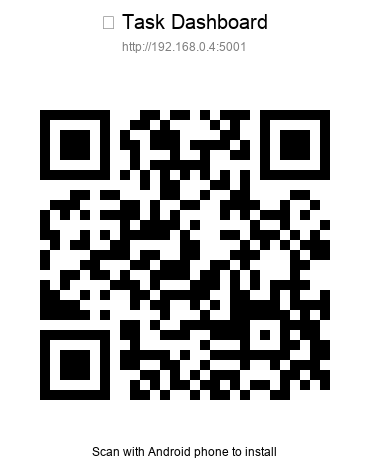
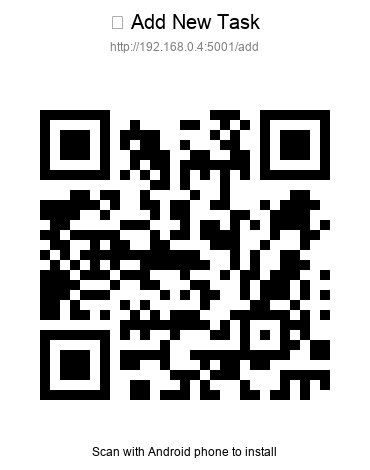
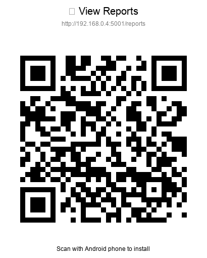

📱 Task Dashboard
Android Installation Guide
🎯 Scan QR Codes to Install
Point your Android camera at any QR code below to instantly access Task Dashboard!
📋 Main App

Opens the main Task Dashboard
➕ Quick Add Task

Direct access to add new tasks
📊 Reports

View analytics and reports
📋 Installation Steps
1
Scan QR Code
Open your Android camera or QR scanner app
2
Open in Browser
Tap the notification to open Task Dashboard
3
Add to Home Screen
Menu → "Add to Home screen" for app-like experience
4
Enjoy!
Launch from home screen like a native app
🔗 Direct Links
If QR scanning doesn't work, use these links directly:
Main App:
http://192.168.0.4:5001
Add Task:
http://192.168.0.4:5001/add
Reports:
http://192.168.0.4:5001/reports
📱 Mobile Optimized
Responsive design for all screen sizes
🎤 Voice Input
Dictate tasks with speech-to-text
📅 Calendar Sync
Export tasks to your calendar
✉️ Email Integration
Send task reminders via email
🔄 Offline Ready
Works as Progressive Web App
⚡ Fast & Light
Optimized for mobile performance
🎉 Ready to Install!
Scan any QR code above or use the direct links to get started with Task Dashboard on your Android device!